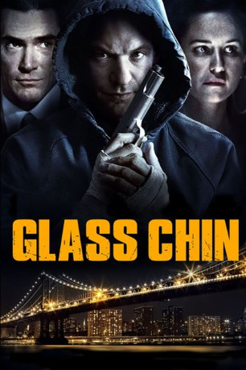
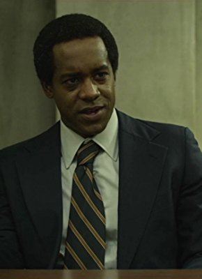

#8710 Glass Chin
 
 IMDB-Wertung: 5.5 / 10
IMDB-Wertung: 5.5 / 10  Metascore: 0
Metascore: 0 
Corey Stoll spielt den ehemaligen Boxer Bud Gordon, dessen beste Tage bereits vorüber sind. Nun wohnt er gemeinsam mit seiner Freundin in einer Wohnung in New Jersey, sehnt sich aber nach dem Ruhm vergangener Tage. Um ins Spiel zurückzukommen, macht er ein Geschäft mit einem korrupten Gastwirt. Natürlich bleiben dabei keine Schwierigkeiten aus – Bud muss sich nun entscheiden, was er wirklich will.
Jahr: 2014
Dauer: 87 Minuten
FSK:
Land: USA Studio: Phase 4 FilmsTonspuren:
Untertitel:
Auflösung: 1080p (1920x1080) Größe: 3891 MB
Genre: Thriller, Drama
Regisseur: Henry Barrial
Drehbuch: Robert Kaplow
Soundtrack:
Darsteller:
 Katherine Waterston als Patricia Petals O'Neal
Katherine Waterston als Patricia Petals O'Neal Billy Crudup als J.J. Cook
Billy Crudup als J.J. Cook Brendan Sexton III als Jimmy Musial
Brendan Sexton III als Jimmy Musial Kelly Lynch als Mae Graham
Kelly Lynch als Mae Graham Corey Stoll als Bud Gordon
Corey Stoll als Bud Gordon Ron Cephas Jones als Ray Ellington
Ron Cephas Jones als Ray Ellington Marin Ireland als Ellen Doyle
Marin Ireland als Ellen Doyle Elizabeth Rodriguez als Rita Sierra
Elizabeth Rodriguez als Rita Sierra Yul Vazquez als Roberto Flash
Yul Vazquez als Roberto Flash Michael Chernus als Brian Colby
Michael Chernus als Brian Colby John Ventimiglia als Jack Marchiano
John Ventimiglia als Jack Marchiano- David Johansen als Stanley Loori
- Halley Feiffer als Kathryn Glassman
- Ivan Martin als Detective Gerard Herko
- Anthony Arkin als Homer Nicholas
- Rodrigo Lopresti als Ben McLemore
-  Albert Jones als Don Marbury
- Steven Marcus als Gil Dunphy
- Michael McCartney als Aaron Judlowe
- Charlie V. Wilson als Robert Aitken
- Olivia Killingsworth als Caron Levis
- Malcolm Xavier als Kid Sunshine
- Emily Fleischer als Maurine Stuart
- John Douglas Thompson als Lou Gibson
- Cortez Nance Jr. als Hernandez Alou
- Kapil Bawa als Mingus Ali Khan
- Armand Dahan als Claude Papillion
- Marina Dee als Lidia Bernik
- Woodrow Morton als Soen Mayo
- Harry Keitt als Floyd Judah
Datei: X:\2014(G-M)\Glass Chin (2014, FSK, 1920x1080).mkv seit 25.04.2018
Festplatte: HD 2013(I-Z)-2014(A-Z)
 Es gibt insgesamt 136 Filme in der Gruppe '2014(G-M)'
Es gibt insgesamt 136 Filme in der Gruppe '2014(G-M)'